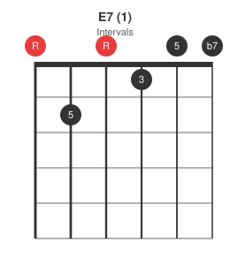
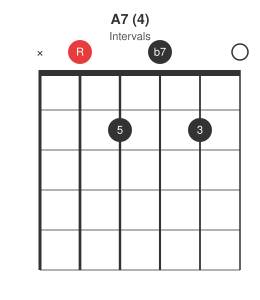
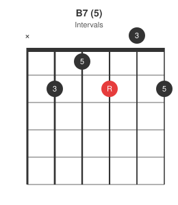
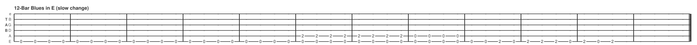

The previous post introduced the I-IV-V relationship and the Nashville Number System. This post applies it directly: the 12-bar blues, which is nothing more than a fixed pattern of 1s, 4s, and 5s repeated for every key a guitarist plays in.
Quick lookup table
Find your key, read off the three chords, skip the theory.
| Key | 1 | 4 | 5 |
|---|---|---|---|
| E | E7 | A7 | B7 |
| A | A7 | D7 | E7 |
| D | D7 | G7 | A7 |
| G | G7 | C7 | D7 |
| C | C7 | F7 | G7 |
Blues convention makes all three chords dominant 7ths, not just the V -- that b7 is part of the blues sound, not a "correct" borrowed chord from theory.
The 12-bar form
Standard (slow-change) form, four bars per line:
1 1 1 1
4 4 1 1
5 4 1 1
Quick-change variant (moves to the 4 in bar 2, common in faster shuffles):
1 4 1 1
4 4 1 1
5 4 1 5
The last bar in both versions is the turnaround -- often played as 1-5 or a walk-up back to the top, signalling the form is about to repeat.
Worked example: key of E
Using the lookup table above, E blues plays E7 - A7 - B7.



Twelve bars, slow-change form, laid out as tab (one character per beat, four beats per bar, bar lines every 4):

The tab above is a rhythm skeleton, not a fixed part -- swap in whatever comping or shuffle pattern fits the tune; the point is the chord positions land on the right bars.
Turnaround
Bars 11-12 typically walk 1-5, or the V chord alone, to create tension that resolves back to the 1 at the top of the form. In the key of E that's often E7 sliding to B7 in the final two bars, sometimes with a chromatic walk-up on the low E string underneath.
The next posts in this series turn back to chord vocabulary: variations on the open A, D, and E shapes used throughout this progression.